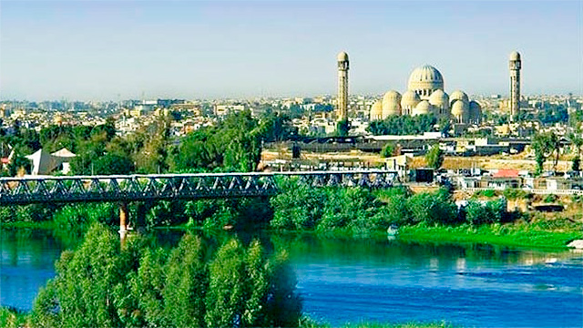

Hello everyone and welcome to my simple website! I would like to start with my name. My name is Mustafa and I'm from Iraq. I live in a house with my family, my mother, my father, and my sister! My father's name is Moayed, my mother's name is Maysaa, my sister's name is Noor. We moved to Canada before about two years. And honestly we love Canada so much! It was more peaceful place than Iraq. Because it was a theater of wars and it wasn't safe at all. Luckily I just lived there for about ten months and then we moved to a different country (UAE), we lived there for 13 years and then we moved to Canada. At that time to be specific.
Now i will start with a list about my previous pets!
- I used to have a Canary. It was so lovely and it can make beautiful sounds.
- I used to have a Parrot, it's called "grey parrot" and it was super nice. I loved it so much
- Lastly, the Love Bird. I mean what can I say. It's already self-explanatory by it's name. It was a great bird. I adore him.
A picture of my homecountry before the wars :)
A picture of my homecountry after the wars :(

Okay so after we gone through my life in the past. Let's start with my current life!
These are my top three favourite movies!
- My most favourite movie is "Snake Eyes" because it was action but in a more realistic way. I loved it.
- My second best movie is "avengers endgame" I wouldn't say it's the best because it was just emotions and there wasn't lots of action during the movie. But it was still good.
- My third best movie is "Matrix". Even though it's old movie but I still love it. It was special and new.
We finished from Movies, now it's game time! I honestly love games and I'm going to share with you my top three games
- The most game I love is "Gears of War" It's a really nice game and I love it. The game is about Zombies attack the earth and they are trying to stop them
- My second best game is CS:GO (Counter Strike: Global Offensive) and it's a multiplayer first-person shooter game.
- My Third best game is Call Of Duty. It's a very nice game and it's basically about accomplishing missions. It's the most realistic game comparing to the other two! and that what makes it special.
Extra thing about me is that I love travelling. But since Covid-19 is a thing. We can not go anywhere and we are in the Lockdown, speaking of travelling. I also like languages! Perhaps in the future I might learn a new language just for fun! I already know two languages, English and Arabic. Arabic is my main language and I can speak fluently with no problems. But in English; I'm trying to work on myself more and try to rival the English native speakers! I will show you an example of how Arabic language looks like!
اهلا وسهلا! هذا اللغه العربيه. انا احب لغتيه جدا لكن للاسف لا استطيع التكلم بالعربيه مع الكنديين. لكن انا استطيع اتكلم مع اهلي بالعربيه وهو امر جيد على ما اعتقد.